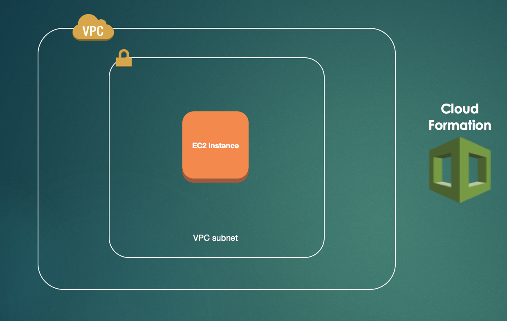

Cloudformation 101
An introduction
Created by Hugh McManus / @hugh_mc_manus
Agenda
- Check ssh access to jumpbox
- Introduction to Cloudformation
- Exercises
- Round up
- Retrospective
SSH access to jumpbox from your machine
ssh <username>@<x.x.x.x>Replacing <username> with your username
And replacing <x.x.x.x> with the IP of your jumpbox
The why
“AWS CloudFormation gives developers and systems administrators an easy way to create and manage a collection of related AWS resources, provisioning and updating them in an orderly and predictable fashion.”
Advantages of this model of development
- Source controlled infrastructure as code
- Changes can be tracked and controlled
- Reliable, repeatable change and rollback system
A word to the wise
- Cloudformation is a consumer of the raw API's
- Not up to date as the API
- eg. API Gateway not currently support
- Updating an SNS topic properties
Exercise #1: Manual EC2
Manually through the console
Login to the AWS console1.1: From EC2
Use the EC2 management console1.2: Launch Instance
Click the launch instance1.3: Choose your AMI
Pick the Amazon Machine Image basis for your instance1.4: Choose the instance type
Here's a list of AWS instance types1.5: Instance details
Network: cf101
Subnet: cf101-public-subnet
Auto-assign Public IP: Enable
1.6: Tag instance
1.7: Instance Security Group
cf101-EC2SecurityGroupAccessFromJumpbox-11L3UL9O6DC2E
1.8: Choose an existing key pair
1.9: Access from the jumpbox
ssh -i ~/.ssh/dojo-key.pem ec2-user@<instance-ip>1.10: Terminate instance
The How
JSON files to describe a set of resources
...
"example1Ec2": {
"Type" : "AWS::EC2::Instance",
"Properties": {
"ImageId": "ami-6bf88b12",
"InstanceType": "t1.micro",
"SubnetId": "subnet-55e76884",
"KeyName": { "Ref": "KeyName" },
"Tags": [
{ "Key": "Name", "Value": "MyTag" }
]
}
}
}
...
What makes up a template
{
"AWSTemplateFormatVersion": "",
"Description": "",
"Metadata": { "Optional" },
"Parameters": { "Optional" },
"Mappings": { "Optional" },
"Conditions": { "Optional" },
"Resources": { "Required" },
"Outputs": { "Optional" }
}
Ex #2: EC2 from CloudFormation
2.1: Use the Cloud Formation console
2.2: Create stack
2.3: Select the template file
src/exercise-2/basic-ec2.template
2.4: Specify the stack name
2.5: Specify the parmameters
2.6: Cloudformation tags
2.7: Create
2.8: Stack Status
2.9: Stack Events
2.10: View Instance
Ex #3: SQS Queue Resource
3.1: Online reference
3.2: Update existing stack

3.3: Select the updated template file
3.4: Update
Keep the existing stack parameters then update3.5: Check for UPDATE_COMPLETE

3.6: New Resources
3.7: SQS in the console
3.8: View your new queue
Ex #4: Removing Resources
4.1: Remove the resources from the JSON
4.2: Update stack

4.3: No more Queue
Ex #5: Firewall control
Ex #5: Two Parts
- Create a new Security Group Resource
- Reference the new resource from the existing ec2 resource
5.1.0: Security Groups
“Security groups — Act as a firewall for associated Amazon EC2 instances, controlling both inbound and outbound traffic at the instance level”
5.1.1: SG Online reference
Security Group Cloudformation template definition
Reference for creating a Security Group
5.1.2: Rule definition
Security Group Ingress Rules reference
- Create security group ingress rule
- Set the IP Protocol to 'tcp'
- Set the to port to '80'
- Set the from port to '80'
- Set the Cidr range to '0.0.0.0/0'
5.1.3: Select updated template

5.1.4: Update Complete

5.1.5: New Resource
5.1.6: EC2 Console Security Groups
5.2: Add SG to EC2 Instance
- Edit the network interface definition for the ec2 instance
- Add and reference the new created security group
5.2.1: EC2 Online reference
5.2.2: Select updated template

5.2.3: Update Complete
5.2.4: Check SG's on Instance
Ex #6: User data
6.1: User data
“AWS EC2 instance user data allows you to execute commands when an instance is launched”Exercise details
- Install httpd on the instance
- Echo some text to /var/www/html/index.html
- Start the httpd service
6.2: Online reference
6.3: Select updated template
6.4: Update Complete

6.5: Find the instance public IP
6.6: Visit public IP on your browser
You should see the contents that you have echoed to the fileAlternatives
Teraform
“Terraform is a tool for building, changing, and versioning infrastructure safely and efficiently. Terraform can manage existing and popular service providers as well as custom in-house solutions”
Programmatic templates
Python
“troposphere - library to create AWS CloudFormation descriptions”
Asguard
“Asgard is a web-based tool for managing cloud-based applications and infrastructure.”
Commercial products
“RightScale”
“ServiceMesh”
“etc...”